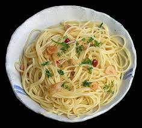

Spaghetti aglio e olio Recipe:

Description:>
This classic Italian dish is as simple as it gets, but don't be fooled by its minimalist nature! Thinly sliced garlic and a kick of red pepper flakes dance together in a pan with fragrant olive oil, creating a tantalizing aroma that will have your taste buds doing the mambo. Toss this flavorful sauce with al dente spaghetti, sprinkle with fresh parsley, and voila! You've got a plate of pasta that will make you say "Holy cannoli, that's delicious!"
Ingredients:
- 8 ounces (225 grams) spaghetti
- 4 cloves garlic, thinly sliced
- 1/4 cup extra virgin olive oil
- 1/2 teaspoon red pepper flakes (adjust according to your spice preference)
- Salt, to taste
- Freshly ground black pepper, to taste
- 1/4 cup chopped fresh parsley
- Grated Parmesan cheese (optional)
Steps:
- Cook the spaghetti in a large pot of salted boiling water according to the package instructions until al dente.
- While the pasta is cooking, heat the olive oil in a large skillet over medium heat. Add the garlic slices and red pepper flakes to the skillet.
- Cook the garlic and pepper flakes, stirring frequently, until the garlic turns golden brown and fragrant. Be careful not to burn the garlic.
- Remove the skillet from heat and set it aside.
- Once the spaghetti is cooked, drain it, reserving about 1/2 cup of the pasta cooking water.
- Add the drained spaghetti to the skillet with the garlic and oil mixture.
- Toss the spaghetti with the garlic and oil, coating it evenly. If the pasta seems dry, add a splash of the reserved pasta cooking water to moisten it.
- Season the spaghetti with salt and freshly ground black pepper to taste. Toss again to combine.
- Stir in the chopped parsley.
- Serve the spaghetti aglio e olio immediately, garnished with grated Parmesan cheese if desired.